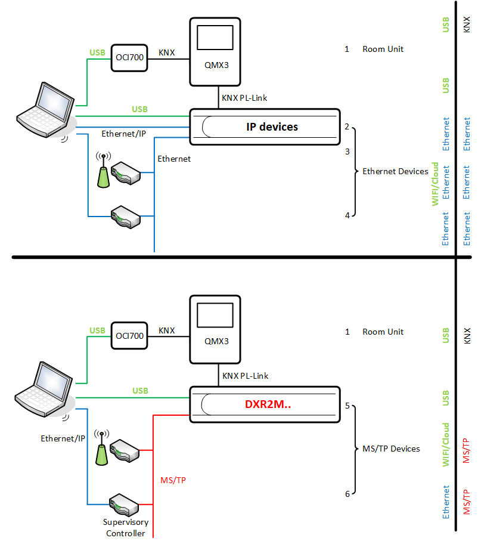

Connection types and network card settings
There are several connection types available depending on whether the device is to be used for Ethernet or for MS/TP.
- Connecting directly to a room operator unit
- Connecting via an Ethernet/IP network
- Connecting via USB port
